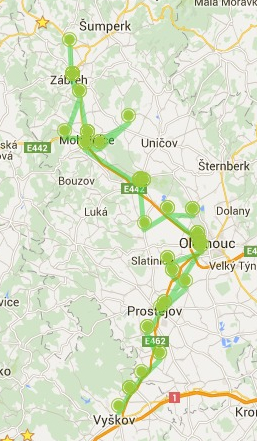

Example
- Example
- How to send SMS ?
- How to receive SMS ?
- Is a delivery receipt supported ?
- Other Service Listeners
How to send SMS ?
A simplest way how to use jSMS4Pi is the Service class.
// get service Service service = Service.getInstance();
Next step is to add a Gateway. The Gateway is a representation of Modem connected to (virtual) serial port. For modem installation instruction please see Modem Installation.
// add a gateway into service, named 'fooGateway' service.addDefaultGateway(“/dev/ttyUSB2”, "fooGateway");
Now it is possible to send a text message. Create the text message
// create new text message OutboundMessage message = new OutboundMessage(“Sent by the jSMS4Pi java library”, “111222333”);
and send it.
service.sendMessage(message);
Before exiting the program all gateways must be unregistered and closed
// unregister and close all gateways from service service.removeAllGateway();
For full example on how to send a text message through the Service class see GitHub. To run see ServiceSendMessageExample.
How to receive SMS ?
The Service class has several callback methods. Basic methods are
public void outboundMessageEvent(String gatewayName, OutboundMessageEvent event)
and
public void inboundMessageEvent(String gatewayName, InboundMessageEvent inboundMessageEvent)
To receive a text message The InboundMessageListene interface must be implemented and registered into the service class.
// registered into service service.addInboundCallListener(this);
// callback when new text message is received
@Override
public void inboundMessageEvent(String gatewayName, InboundMessageEvent inboundMessageEvent) {
System.out.println("Received a message from '" + inboundMessageEvent.getMessage().getSource() + "'");
System.out.println(", text: " + inboundMessageEvent.getMessage().getText() + "'");
}Now when an inbound text message is detected it will be printed.
Received a message from '12345', text: 'Sent by the jSMS4Pi java library');
For full example on how to receive a text message through the Service class see GitHub. To run see ServiceListenerExample.
Is a delivery receipt supported ?
Yes. When the status of an outbound text message is changed the OutboundMessageListener is informed. Statuses are:
NOT_SENT_NO_SIGNAL, NOT_SENT, SENT_NOT_ACK,SENT_ACK, EXPIRED;
- NOT_SENT_NO_SIGNAL The message wasn't sent. The message is waiting for a GSM signal.
- NOT_SENT The default status. The message wasn't sent yet.
- SENT_NOT_ACK The message was sent but without delivery receipt.
- SENT_ACK The message was sent with delivery receipt.
- EXPIRED The message wasn't delivered because the time for delivery has expired.
Other Service Listeners
The Service class has additional listeners.
GatewayStatusListener
Informs of a gateway status change. Each gateway has one of these states:
CLOSED, OPENED, SIM_OK, INITIALIZED, NETWORK_OK, BUSY, READY
- CLOSED, OPENED informs about connection to serial port
- SIM_OK no PIN code or accepted PIN code
- INITIALIZED the modem is initialized (accepted setup)
- NETWORK_OK the modem is connected into GSM network
- READY ready to send/receive a text message
- BUSY working or waiting for modem communication
NetworkStatusListener
Informs of a Network Status change. Status:
- NOT_REGISTERED
- REGISTERED
- SEARCHING
- DENIED
- UNKNOWN
- ROAMING
- SMS_ONLY
- SMS_ONLY_ROAMING
- EMERGENCY_ONLY
- CSFB
- CSFB_REAMING
InboundCallListener
Informs of a new inbound call. Shows the source phone number:
NetworkCellListener
Informs of the cell network change (the modem is registered into new BTS). This feature can be used as a tracker (without GPS). The maps below are showing trip tracked by this tool. Here a full map
Examples
- ServiceListenerExample
Demonstrates how to use the Service class and Listeners. After running, all available notifications from modem are printed.Try call to modem (InboundCallListener). Callers phone number will be printed (if modem supports it). NetworkCellListener is best to try on the move (in a car, bus, ...). It is possible to find GPS location of BTS by Cell-ID (and calculate the approximate position of the modem) if there is an existing list of BTS with GPS in your country.
To run this example: (bash script)
ServiceListenerExample.sh
or classical
java -cp jSMS4Pi-<version>.jar cz.zerog.jsms4pi.example.ServiceListenerExample
For help use -h argument
ServiceListenerExample.sh -h
or
java -cp jSMS4Pi-<version>.jar cz.zerog.jsms4pi.example.ServiceListenerExample -h
Source code is available at GitHub
- ServiceSendMessageExample
This example explains how to easily send a text message through the Service class.
To run this example: (bash script)
ServiceSendMessageExample.sh
or classical
java -cp jSMS4Pi-<version>.jar cz.zerog.jsms4pi.example.ServiceSendMessageExample
For help use -h argument
ServiceSendMessageExample.sh -h
or
java -cp jSMS4Pi-<version>.jar cz.zerog.jsms4pi.example.ServiceSendMessageExample -h
Source code is available at GitHub
- ServiceSendWithReceipt
Similar as the Send Example but with delivery receipt.